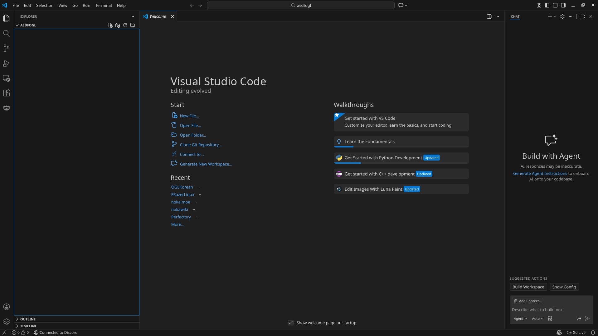

최초의 창 - 리눅스
리눅스에는 CMake GUI보다는 CLI를 더 많이 사용합니다. 진정한 개발자가 되려면 CMake CLI의 사용법을 익히는 것이 좋습니다. 그러므로 우리는 CMake CLI 버전의 사용법을 알아봅시다!
CMake CLI
여기까지 오셨다면 CMake를 설치할 줄은 안다고 생각하지만 혹시 모를수도 있으니 설명드리겠습니다.
우분투에선 아래 명령어를 차례대로 실행하기만 하면 됩니다.
$ sudo apt update
$ sudo apt install cmake
이 글을 작성할 시점에는 GLFW의 마지막 버전이 3.4 버전이였음을 참고하세요.
GLFW 다운로드 홈페이지에서 다운로드 받은 소스 패키지 압축을 풀고, 압축을 푼 폴더에서 터미널을 열겠습니다. 제대로 설치되었는지 확인하기 위해 터미널에 cmake 명령어를 사용해 보겠습니다. CMake의 사용법이 나온다면 설치가 제대로 된것입니다. 아래 명령어를 입력해 보겠습니다.
$ cmake -S . -B build
매우 간단한 명령어입니다. GLFW 소스 폴더를 빌드하고, 결과물은 build 폴더에 둔다는 뜻입니다. 그리고 이제 인클루드 폴더를 프로젝트 폴더로 가져와야 할것이라고 생각할 것입니다. 하지만 아닙니다. 현대 리눅스는 시스템에 인클루드와 라이브러리 빌드를 설치할 수 있습니다. 아래의 명령어로 라이브러리를 설치하세요.
$ cmake --build build # GLFW를 빌드합니다.
$ sudo cmake --install build # 그리고 설치합니다.
첫 발걸음
우리는 VSCode를 사용하여 프로젝트를 진행할 것입니다. VSCode를 설치하고, 폴더를 하나 만들어서 VSCode로 여세요. 아래와 같은 화면을 마주할 수 있을겁니다.

우리는 여기서 무엇이든 할 수 있습니다!
링킹
우리는 위에서 CMake를 활용해 빌드했습니다. 그리고 설치했습니다. 이제 링킹만 남았습니다.
우리는 GCC를 사용할 것입니다. 기본적으로 gcc [파일이름]와 같은 형태로 C언어 파일을 컴파일 할수 있습니다. OpenGL을 링킹해보겠습니다. 링커 설정에 -lGL 옵션을 추가하여 시스템에 내장된 libGL.so 라이브러리를 링킹할 수 있습니다. 라이브러리를 찾을 수 없는 경우 Mesa, NVidia 또는 AMD 개발 패키지를 설치해야 할 수도 있습니다. 명령어는 gcc main.c -lGL 와 같은 형태일 것입니다.
그런 다음, 링커 설정에 GLFW를 링킹해야 합니다. -lglfw3 와 같은 옵션을 사용하여 링킹할수 있습니다. OpenGL 라이브러리를 모두 추가했으면 명령어는 gcc main.c -lGL -lglfw3 와 같은 형태일 것입니다. 이제 다음과 같이 C언어 파일에 GLFW 헤더 파일을 포함할 수 있습니다.
#include <GLFW/glfw3.h>
환경에 따라 다음과 같은 추가 라이브러리가 필요할 수 있습니다. -lX11 -lpthread -lXrandr -lXi -ldl
이것으로 GLFW의 설정 및 구성이 완료되었습니다.
더 낫게 만들기
매번 모든 링킹 옵션을 외워서 사용하는것은 번거로울 수 있습니다. 이것에 대한 유명한 해답으로 pkg-config 을 사용할 수 있습니다. 먼저 GLFW가 제대로 설치되었고, 인식되었는지 확인합니다.
$ pkg-config --modversion glfw3
제대로 설치되었다면 GLFW의 버전이 나올 것입니다. 우리는 이제 긴 링킹 옵션 대신 다음 명령어를 사용할 수 있습니다.
$ gcc main.c $(pkg-config --cflags --libs glfw3)
모두 마쳤다면 당신은 이제 리눅스 CMake를 모두 배웠습니다! 아직 배울것이 많습니다. 이제 다시 최초의 창으로 이동하여 계속 진행하세요.(GLAD가 남았습니다.)